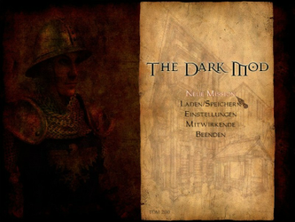
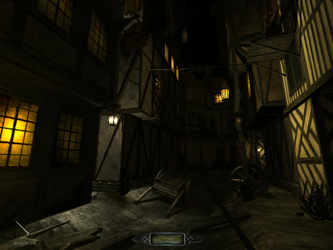
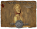
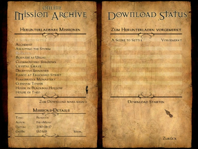
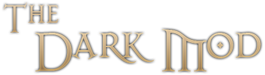

The Dark Mod
Dieser Artikel wurde für die folgenden Ubuntu-Versionen getestet:
Ubuntu 16.04 Xenial Xerus
Ubuntu 14.04 Trusty Tahr
Zum Verständnis dieses Artikels sind folgende Seiten hilfreich:
The Dark Mod  ist ein Total Conversion Mod, welcher auf der Engine von Doom 3 basiert.
ist ein Total Conversion Mod, welcher auf der Engine von Doom 3 basiert.
Es handelt sich um ein Schleichspiel, welches von der Computerspielreihe Thief (Looking Glass Studios) inspiriert wurde. Es gibt eine Vielzahl von Missionen, welche in unterschiedlichen Sprachen vorliegen.
|  |  |
| Menü | Tutorial |
Installation¶
Vorbereitung¶
Nutzer eines 64-Bit-Systems müssen im Vorfeld einige 32-Bit-Pakete installieren [1]:
libc6:i386 (32-Bit-Paket)
libstdc++6:i386 (32-Bit-Paket)
libx11-6:i386 (32-Bit-Paket)
libxext6:i386 (32-Bit-Paket)
libxxf86vm1:i386 (32-Bit-Paket)
libpng12-0:i386 (32-Bit-Paket)
libasound2-plugins:i386 (32-Bit-Paket)
 mit apturl
mit apturl
Paketliste zum Kopieren:
sudo apt-get install libc6:i386 libstdc++6:i386 libx11-6:i386 libxext6:i386 libxxf86vm1:i386 libpng12-0:i386 libasound2-plugins:i386
sudo aptitude install libc6:i386 libstdc++6:i386 libx11-6:i386 libxext6:i386 libxxf86vm1:i386 libpng12-0:i386 libasound2-plugins:i386
Projektseite¶
Von der Projektseite  das Archiv mit dem TDM Updater für Linux herunterladen, entpacken [2] und Ausführrechte [3] für tdm_update.linux vergeben. Im nächsten Schritt im Homeverzeichnis den Ordner ~/Spiele/darkmod erstellen und dorthin die Datei tdm_update.linux verschieben. Abschließend die Installation des Spiels mit dem folgenden Befehl einleiten [4]:
das Archiv mit dem TDM Updater für Linux herunterladen, entpacken [2] und Ausführrechte [3] für tdm_update.linux vergeben. Im nächsten Schritt im Homeverzeichnis den Ordner ~/Spiele/darkmod erstellen und dorthin die Datei tdm_update.linux verschieben. Abschließend die Installation des Spiels mit dem folgenden Befehl einleiten [4]:
Hinweis:
Das Verzeichnis, in dem das Spiel abgelegt wird, muss darkmod heißen, sonst erhält man im Spiel eine Fehlermeldung, wenn man einen Spielstand laden möchte. In Zukunft soll das aber behoben werden.
./tdm_update.linux TDM Updater v0.61 (c) 2009-2013 by tels & greebo. Part of The Dark Mod (http://www.thedarkmod.com). ---------------------------------------------------------------------------- Initialising... Done. ---------------------------------------------------------------------------- Cleaning up previous update session... Done. ---------------------------------------------------------------------------- Downloading mirror information... Done downloading mirrors. Found 10 mirrors. ---------------------------------------------------------------------------- Downloading CRC file... ...
TDM kann aus dem Installationsverzeichnis heraus mit thedarkmod.x86 gestartet [5] werden. Auf Wunsch einen Menüeintrag [6] vornehmen (s. Problembehebung) und ggf. nach dem ersten Spielstart die Spielsprache anpassen.

Missionen¶
Im Grundspiel sind nur zwei Missionen enthalten. Zusätzliche Missionen können von thedarkmod.com heruntergeladen werden. Diese liegen als .pk4-Dateien vor und werden in den Ordner fms innerhalb des Installationsverzeichnisses (z.B. ~/Spiele/darkmod/) kopiert. Beim nächsten Spielstart werden die neuen Missionen erkannt und erscheinen in der rechten Liste ("Verfügbare Missionen"). Über "Verfügbare Missionen -> Installieren" wird die gewünschte Mission installiert und das Spiel startet sich automatisch neu. Es steht danach in der linken Liste, mit den installierten Missionen, zur Verfügung.
Hinweis:
Sofern für eine Mission ein Update zur Verfügung steht, muss die ältere Version im Vorfeld deinstalliert werden. Einige Missionen beinhalten Localization Packs (Sprachpakete) – diese ebenfalls herunterladen.
|  |
| Downloadmanager |
Downloadmanager¶
Alternativ kann über "Neue Missionen holen" direkt auf die Server zugegriffen werden. Hier aus der linken Liste ("Herunterladbare Missionen") die gewünschte Mission anwählen und bei Gefallen auf "Zum Download markieren" gehen. Die Mission wird auf die rechte Seite ("Zum Herunterladen vorgemerkt") übertragen und mit "Download starten" werden die gewünschten Inhalte heruntergeladen. Sofern man einen Eintrag von der rechten Seite löschen möchte, wählt man ihn mit der Maus an. Nachdem ein Level heruntergeladen wurde, ist es unter "Verfügbare Missionen" zu finden und muss aktiviert werden.
Problemlösungen¶
Spielsprache¶
Über "Options -> Video -> Language" kann die gewünschte Spielsprache ausgewählt werden.
Tastenkürzel¶
| Tastenkürzel | |
| Taste(n) | Funktion |
| 1 - 0 | Waffenauswahl |
| C | Hochziehen |
| U | Benutzen |
| G | Fernrohr |
| L | Laterne |
| R | Ablegen |
| O | Ziele |
Z /  | Objekt drehen |
| Esc | Menü |

Infobox¶
| The Dark Mod | |
| Genre: | Schleich-Shooter |
| Sprache: |     |
| Veröffentlichung: | 2009+ |
| Entwickler: | Broken Glass Studios |
| Systemvoraussetzungen: | - |
| Medien: | Download |
| Strichcode / EAN / GTIN: | - |
| Läuft mit: | nativ |
Problembehebung¶
Menüeintrag anlegen¶
Ein Menüeintrag [6], der thedarkmod.x86 ausführt, funktioniert nicht, weil zuerst das Verzeichnis gewechselt werden muss. Man kann das Problem aber entweder mit einem kleinen Skript oder durch Bearbeitung der .desktop-Datei beheben.
Skript erstellen¶
Man erstellt ein kleines Skript darkmod.sh mit folgendem Inhalt im Spielverzeichnis:
1 2 3 | #!/bin/bash cd ~/Spiele/darkmod/ ./thedarkmod.x86 |
Dieses muss noch ausführbar gemacht werden [3]. Der Menüeintrag startet dann dieses Skript.
.destop-Datei bearbeiten¶
In die .desktop-Datei folgende Zeile einfügen:
Path=/home/<Nutzername>/Spiele/darkmod/
<Nutzername> ist natürlich zu ersetzen. Danach startet das Spiel korrekt.
Fensterwechsel unmöglich¶
Das Spiel erlaubt es nicht, mit einer Tastenkombination wie Alt + Tab ⇆ andere Fenster in den Vordergrund zu holen; das TDM-Fenster behält stets den Fokus. Es ist jedoch möglich, das Fenster zu wechseln, indem man zuerst die TDM-Konsole öffnet (standardmäßig mit ^ und dann erst die Tastenkombination benutzt. Nach der Rückkehr ins TDM-Fenster kann es sein, dass man die Kamera nicht mehr nach links oder rechts drehen kann – in dem Fall genügt es, den Spielstand neuzuladen.

- Erstellt mit Inyoka
-
 2004 – 2017 ubuntuusers.de • Einige Rechte vorbehalten
2004 – 2017 ubuntuusers.de • Einige Rechte vorbehalten
Lizenz • Kontakt • Datenschutz • Impressum • Serverstatus -
Serverhousing gespendet von